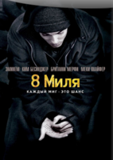

«8 миля» — американский фильм-драма 2002 года с Эминемом в главной роли. Название обозначает съезд «8 Mile Road» в Детройте.
Фильм описывает жизнь молодого белого рэпера по имени Джимми «Кролик» Смит-младший (Эминем), живущего во внутренней части Детройта в 1995 году, и его попытки начать карьеру рэпера, где правят преимущественно афроамериканцы.
 В течение многих столетий две расы роботов-инопланетян — Автоботы и Десептиконы — вели войну. И вот война докатилась до Земли. В то время, когда силы зла ищут ключ к верховной власти, наш последний шанс на спасение находится в руках юного землянина. Единственное, что стоит между несущими зло Десептиконами и высшей властью — это ключ, находящийся в руках простого парнишки.
В течение многих столетий две расы роботов-инопланетян — Автоботы и Десептиконы — вели войну. И вот война докатилась до Земли. В то время, когда силы зла ищут ключ к верховной власти, наш последний шанс на спасение находится в руках юного землянина. Единственное, что стоит между несущими зло Десептиконами и высшей властью — это ключ, находящийся в руках простого парнишки.
 Пристегните ремни — гонка продолжается. Гавана, Берлин, Нью-Йорк, для самой крутой команды в мире нет ничего невозможного, пока они вместе. Но когда на их пути окажется одна из самых красивых женщин на планете и по совместительству королева киберпреступности, дороги друзей разойдутся.
Пристегните ремни — гонка продолжается. Гавана, Берлин, Нью-Йорк, для самой крутой команды в мире нет ничего невозможного, пока они вместе. Но когда на их пути окажется одна из самых красивых женщин на планете и по совместительству королева киберпреступности, дороги друзей разойдутся.
Он охотится на преступников, которые совершили на Манхэттене дерзкое ограбление, оставив после себя 8 мертвых полицейских. А продажные копы тем временем охотятся на него, пытаясь подставить. Но преступникам не скрыться, так как первый раз в истории Нью-Йорка полиция перекрыла все выходы с острова, в том числе, 21 мост.